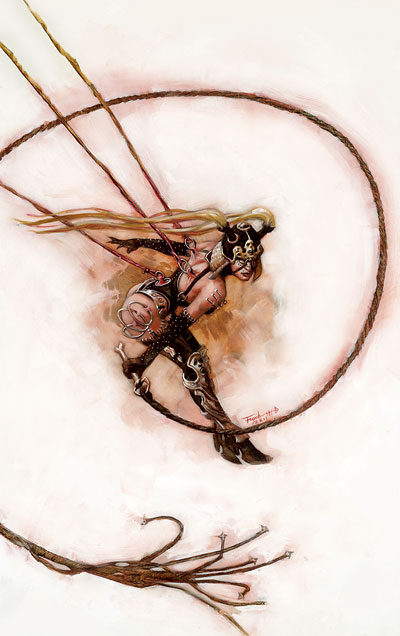
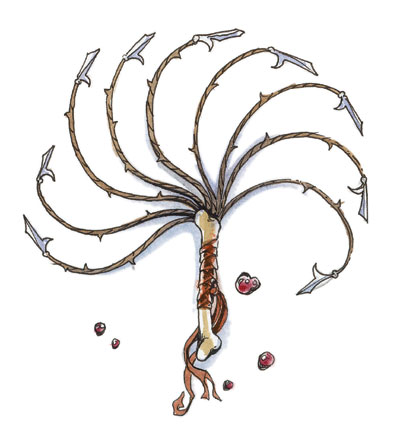

劳薇塔 Loviater （虐待女神）
费伦神系 弱等神力

别称：痛苦少女 Maiden of Pain，意志之鞭 the Willing Whip
圣徽： 以骨头为握柄的九尾鞭

居住界域：毁灭与绝望之荒原 The Barrens of Doom and Despair
阵营：守序邪恶 LE
神职：疼痛 pain，伤害 hurt，苦痛 agony，折磨 torment，苦难 suffering，酷刑 torture
信徒：欺骗者，执行酷刑之人，邪恶的战士，堕落者
牧师阵营：守序中立 LN，守序邪恶 LE，中立邪恶 NE
神域：邪恶 Evil，守序 Law，报复 Retribution，力量 Strength，折磨 Suffering
喜好武器：痛苦使者 Painbringer（九尾鞭 scourge）
劳薇塔是一位侵略成性、专横跋扈且又大胆无惧的女神，守护着费伦大陆上所有的拷问者、虐待狂、及恃强凌弱之人。她的天性既冷酷又精于算计。痛苦少女热衷于制造痛苦（不论是身体或心理上的），她总是能准确地击中受害者心中信念的缺口。她不像大多数的恶霸使用暴力让人屈服，而是完美地运用人性的自私来推动她的计划。
劳薇塔的教会通常都在没落衰颓的大型城市中拥有庞大的势力（因为城市中的腐败官僚系统通常会对她们腐败堕落的行为视而不见），且教会中的掌权者一律都是女性的人类或半精灵。教会通常会在城市的富有与掌权阶级中招收新进成员。她的牧师总是不屈不挠地制造各种折磨（不论是针对个人或是广大群体），像是残暴地鞭打碰到她们的兽人部落（直到对方逃走为止），或是假意与（装成女神信徒前来求爱的）年轻贵族陷入热恋后再狠狠地抛弃对方；她们也努力地破坏所有的恋情与友谊，然后先在这些受害人的面前故作亲昵状的调戏，接着再对受害人冷嘲热讽。对痛苦少女的信徒来说，精湛的演技与美丽的外表（这点可利用法术效果达成）是非常有用的工具；而最受劳薇塔眷顾的人，则是那些能够理解平民大众心理与本质的信徒，因为她们知道该怎么作才能让愚民们陷入最深的痛苦，然后让他们步向灭亡。
劳薇塔的牧师会在早上时用鞭子鞭打自己，然后下跪祈祷以获得神术（傍晚时还会重复一次此仪式，只是不会进行神术祈祷）。她的信徒会在一年之中的四个季节庆典日举行名为「纯净痛苦」（the Rite of Pain and Purity）的仪式－牧师们会赤脚踩在带刺铁丝、尖角、或是碎玻璃上，围成一圈吟唱圣歌并献舞，且高阶的牧师手中挥动的长鞭与围观世俗信徒们的激昂鼓声会将仪式的气氛炒热到最高点。而在每个月的第二十日（除非当天恰好是「纯净痛苦」的圣日），牧师们也会举行名为「烛焰」（Ccadle Rite）的小型仪式－她们围绕着燃烧的蜡烛吟唱圣歌并献舞祈祷，然后不停地用蜡烛的火焰烧灼自己的身体，直到高阶牧师用圣酒熄灭烛火为止。许多劳薇塔牧师都兼职战士专攻使用长鞭的技巧，或是兼职术士与法师（通常专攻幻术系与附魔系）。
历史/与众神的关系 History/Relationship：
劳薇塔曾经是「黑暗众神」（Dark Deities）的一员，与塔洛娜（Talona，毒疫女神，注）一起侍奉巴尔（Bhaal，前任谋杀之神）。自从巴尔死于动荡之年后，这两位女神都逐渐臣服于莎儿（Shar，暗夜女神）的力量之下。然而在班恩（�k曾是巴尔的强大盟友）回归之后，劳薇塔对莎儿的忠诚也开始出现动摇。痛苦少女与马拉（Malar，猎杀之神）相处甚欢，她认为猛兽之王的血腥猎杀也是一种令人愉悦的折磨。劳薇塔极度痛恨伊尔玛特，因为这位受难之神总是不遗余力地保护那些原本该受折磨的人；她也痛恨艾达丝（Eldath，宁和女神）与黎尔拉（Lliira，欢乐女神），因为这两位女神宣称不需经过折磨就可以得到内心的宁静与喜悦。
注：劳薇塔非常喜欢折磨戏弄塔洛娜。
教义 Dogma：
这个世界充满了痛苦与折磨，因此我们唯一能作的就是面对这些无可避免的苦痛，并对那些造成我们苦痛的人回敬更多的苦痛。仁慈是伤害与苦痛最好的同伴，因为只有仁慈的衬托才能加深折磨的痛苦。要记住，永无止境的残酷与折磨只会让受虐者起身反抗，所以偶尔也要（心血来潮地）停止折磨并给予他们意想不到的抚慰与医疗，使其捉摸不清女神的旨意，如此一来，愚昧的民众才会更加渴求痛苦少女的仁慈。要尽力展现自己的诱惑力，让那些渴求折磨的人得到他们想要的、让那些应得之人承受他们应得的、也要让那些脆弱的人承受最深刻的痛苦。长鞭、火焰、以及寒冷是女神赐给信徒最有用的三种工具。不论何时，当我们施加折磨与处罚之时，都应该宣扬劳薇塔的教诲。痛苦是最全面的试炼，它能增强精神的韧性，并让渡过煎熬的人得到真正的喜乐。只有知道女神教规的人，才能施加真正的处罚与虐待。只要有鞭子的地方就会有劳薇塔女神。敬畏劳薇塔，并渴望她的恩典。
--
附录：九尾鞭 scourge 中型奇特武器
价格 伤害 致命一击范围 重量 伤害种类
20gp 1d8 x2 2磅 挥砍